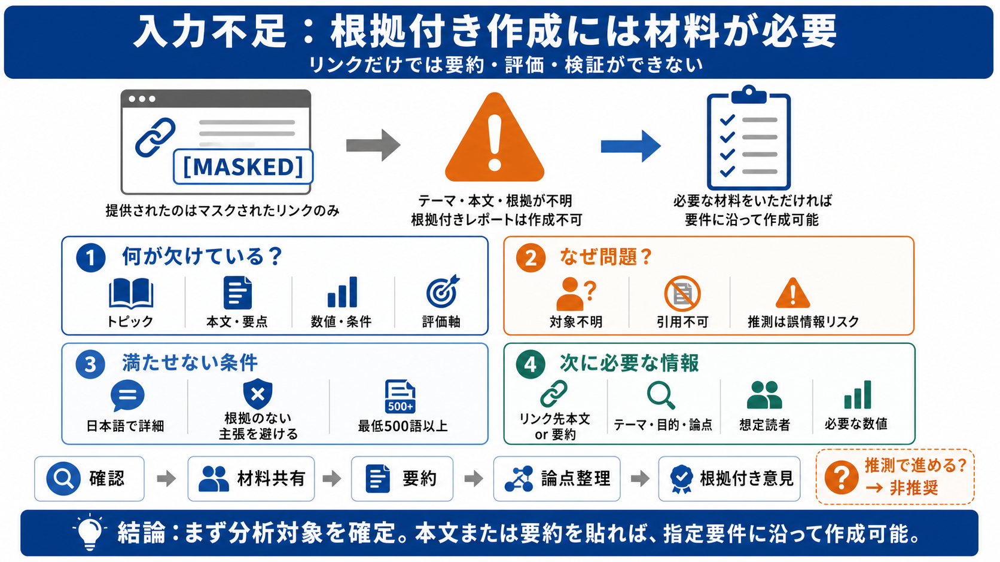

過去から現代における喫煙と分煙の歴史
Jul 5, 2022 — 改正健康増進法によってオフィスや施設内も禁煙化される. 2003年の健康増進法の施行によって、多くの人が利用する店舗や施設において受動喫煙対策が施され

提示された「入力」はリンク形式（例：[MASKED]）のみで、テーマ・本文・論点・根拠となる情報がありません。そのため要約や評価を根拠付きで作れません。
何についてのレポートか（技術／政策／調査結果／プロジェクト計画など）が未定義です。結果として「結論に到達するための前提」が作れません。
リンク先が [MASKED] でマスクされているため、参照・引用・検証ができません。不確かな推測で補うと、誤情報リスクが増えます。
「日本語で詳細に（最低500語以上・約1200字）」「根拠のない主張を避ける」といった条件は、参照可能な材料が前提です。材料不足のため達成が困難です。
レポート化のため、リンク先の本文（または要約）か、少なくともテーマ・目的・論点・評価軸が必要です。ここが揃えば、根拠付きの構成にできます。
リンク先が不明な状態で推測だけで作ると、透明性と根拠の面で弱くなります。正確な要約・評価のためには参照テキストが必要です。
テーマが不明なら、まず確認質問で必要情報を回収するのが適切です。手戻りと誤りのリスクを下げられます。
現状はリンク形式のみで、根拠となる内容が欠落しています。リンク先のテキスト（または要約）を共有してもらえれば、指定要件に沿ったレポートを作れます。
Jul 5, 2022 — 改正健康増進法によってオフィスや施設内も禁煙化される. 2003年の健康増進法の施行によって、多くの人が利用する店舗や施設において受動喫煙対策が施され
その結果、法律・条例の施行直前と比べた施行直後の全国の禁煙飲食店の割合は、改正健康増進法施行により5.7%ポイント上昇したと推計されました。また、同時期に条例を施行した東京都と千葉市においては13.5%ポイント（このうち条例の効果は+7.8…
2021年10月18日 : 「けむいモン」 x 全国ご当地キャラクター コラボポスターを公開しました。 2021年03月23日 : 全国の受動喫煙対策事例を更新しました。 2021年01月19日 : 受動喫煙対策推進啓発ツー…
Sep 15, 2008 — この文書は、Americans for nonsmoker's rightsが2008年4月に発表した屋内完全禁煙モデル条例(和訳版)です。
「原則禁煙」のはずの飲食店。ところが繁華街を歩くと「喫煙OK」の店があちこちに。 背景にあるのが「喫煙目的施設」という例外制度。